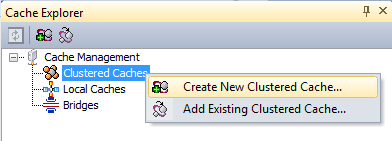
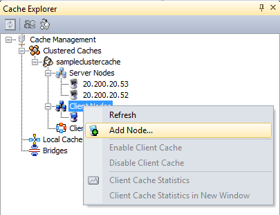
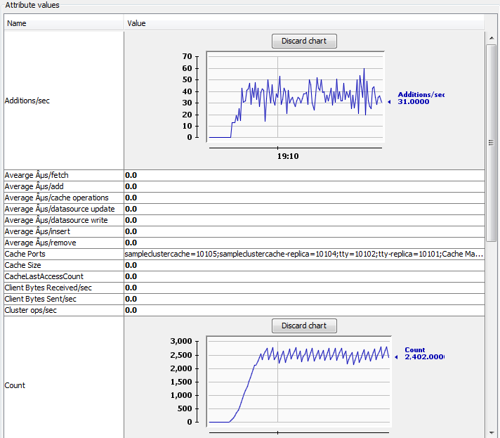
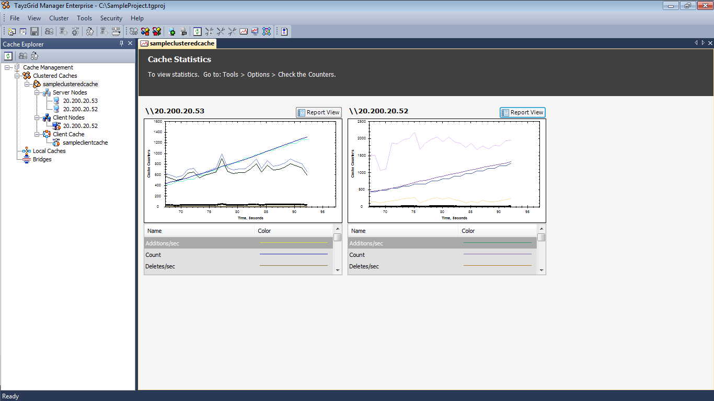

Getting Started Guide
Here
are some basic steps you should follow to ensure a smooth installation,
configuration, and use of TayzGrid:
1. Install TayzGrid on Cache Server and Remote
Client Machines
Install
TayzGrid on all remote client and cache server machines. You will have remote
clients if you have a separate caching tier, otherwise, cache will be hosted on
your application server.
2. Configure Servers for Multiple Network
Cards (optional)
If
your cache servers (including your app servers if you’re hosting cache on them)
have multiple network cards, you must bind TayzGrid to a specific card. You need
to specify the following in server.properties in /opt/tayzgrid/config folder (UNIX) or %TG_HOME%/config
(Windows):
CacheServer.BindToClusterIP=20.200.20.36
CacheServer.BindToClientServerIP=20.200.20.37
|
|
Anytime you modify server.properties, you must restart the TayzGrid Service. |

If
you have multiple network cards, you can bind client/server communication to a
different network card than the clustering network card (as shown above). You
can also bind both of them to the same card.
3. Open Firewall TCP Port
for Clients (optional)
If there is a firewall between your remote clients and the cache
servers, then you must open a TCP port (default 9600) for the remote clients to
talk to the cache servers. If you want to change this from 9600 to another
port, you must make changes in all remote clients and all cache server
machines. On the remote clients, you need to change the “port” value in client.conf as following:
<configuration>
<cache-server port="9600" retry-connection-delays="0" client-request-timeout="90" connection-timeout="5" local-server-ip="" connection-retries="5" retry-interval="1"/>
</configuration>
And, you need to change the CacheServer.Port
value in server.properties file located at /opt/tayzgrid/config folder
(UNIX) or TayzGridDir/TayzGrid/config (Windows):
TayzGridServer.Port=9600
|
|
Anytime you modify server.properties, you must restart the TayzGrid Service. |
All remote clients by default talk to TayzGrid servers on TCP port
9600. So, if there is a firewall between the remote clients and the cache
server, then you must open TCP port 9600 in your firewall.
4. Open Firewall
TCP Port
for Cache Cluster (optional)
If you have a situation where there is a firewall between the
cache servers and the cluster must be formed across this firewall, then you
must open at least two TCP ports (bi-directional) in this firewall. This port
is the
Cluster Port: 7800
Port Range: 1
In this example, port range is 1 so you open port 7800. If the Port
Range is 2, you need to open ports 7800 and 7801.
5. Create New Clustered
Cache
Create a new clustered cache either through the command line tool createcache (UNIX and Windows) or the TayzGrid Manager (Windows). You can
choose to create one of the following types of caches:
1. Mirrored
Cache
2. Partitioned
Cache
3. Partitioned
Cache with Replicas (recommended)
4. Replicated
Cache
For starters, we recommend that you create
a Replicated Cache. Later, you can decide whether a different caching topology
meets your needs better.
Navigate to the bin folder and enter the following command to create a replicated
cache:
[root@servername]# ./createcache samplereplicatedcache -s 20.200.20.59 -S 250 -t replicated
-C 8702
|
|
You can only create a Replicated Cache in
Professional and Express editions; for other types of caches please install TayzGrid Enterprise Edition. |

6. Remote Client Machines
You can use the addclientnode
tool of TayzGrid in order to add a remote client. Navigate to the bin folder and run the addclientnode tool as
follows:
[root@servername]# ./addclientnode samplereplicatedcache -s 20.200.20.59 -e 20.200.20.49
Where –s and –e specify the server node and
remote client node respectively.
You can also use the TayzGrid Manager to add
a remote client. In TayzGrid Manager, TayzGrid Explorer view, right click the
“Client Nodes” node as shown in figure and then click Add Node from the menu.
Using this option you can add and configure single or multiple client nodes in
a clustered cache.

7. Ensure All Objects are Serializable
Whether
you’re using TayzGrid for JSP Sessions or for object caching, you must ensure
that all objects are serializable. This is true even
for those objects that you’re storing in your Session. Here is how to ensure
that:
class Product implements Serializable
{
...
}
8. Modify “web.xml” for JSP Sessions
If you’re using TayzGrid for Sessions, you
need to:
1. Include
TG_HOME/lib/integrations/tg-sessionprovider.jar in your project libraries
2. Modify
your web.xml file and implement TayzGridSessionProvider
filter as follows:
<filter>
<filter-name>TayzGridSessionProvider</filter-name>
<filter-class>com.alachisoft.tayzgrid.web.session.TayzGridSessionProvider</filter-class>
<init-param>
<description>configPath is used to load the session.xml and client.conf files.</description>
<param-name>configPath</param-name>
<param-value>TG_HOME/config/</param-value>
</init-param>
</filter>
<filter-mapping>
<filter-name>TayzGridSessionProvider</filter-name>
<url-pattern>/*</url-pattern>
</filter-mapping>
Make sure the filter 'TayzGridSessionProvider' is the first filter in your web.xml and filter-name is
same in <filter> and <filter-mapping> tags. From the given 'configPath' path TayzGridSessionProvider loads the session.xml for session caching related configurations. Please read online help
for more details on each of the properties given in session.xml. For now, just make sure that cache id="mycache" reflects name of the cache you’ve created.
9. Run Application and Monitor Cache Performance:
You are now ready to run your application. One way you can monitor
your cache performance is through the jconsole utility.

You can also view your cache performance through the TayzGrid
Manager as shown below:
